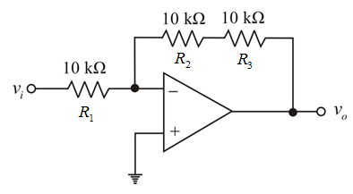
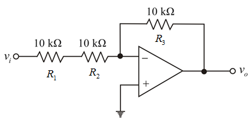
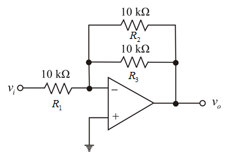
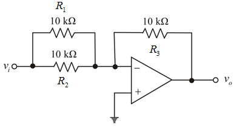

Step 1:
Using series and parallel combinations with three  resistors, four types of inverting amplifier circuit topologies are possible.
resistors, four types of inverting amplifier circuit topologies are possible.
Topology 1: Two resistors are connected in series in feedback path and one resistor is at input. Draw the circuit diagram.

Step 2:
Step 3:
Calculate the equivalent resistance in the feedback path.
Determine the voltage gain of the amplifier circuit.
Therefore, the voltage gain of the op-amp circuit is .
Step 4:
Determine the input resistance of the circuit,  .
.
Therefore, the input resistance,  of the op-amp circuit is
of the op-amp circuit is  .
.
Step 5:
Topology 2: Two resistors are connected in series at input path and one resistor is connected in feedback path. Draw the circuit diagram.

Step 6:
Step 7:
Calculate the equivalent resistance in the input path.
Determine the voltage gain of the amplifier circuit.
Therefore, the voltage gain of the op-amp circuit is .
Step 8:
Determine the input resistance of the circuit,  .
.
Therefore, the input resistance,  of the op-amp circuit is
of the op-amp circuit is  .
.
Step 9:
Topology 3: Two resistors are connected in parallel in feedback path and one resistor is at input. Draw the circuit diagram.

Figure 3
Step 10:
Calculate the equivalent resistance in the feedback path.
Determine the voltage gain of the amplifier circuit.
Therefore, the voltage gain of the op-amp circuit is .
Step 11:
Determine the input resistance of the circuit,  .
.

Therefore, the input resistance,  of the op-amp circuit is .
of the op-amp circuit is .
Step 12:
Topology 4: Two resistors are connected in parallel at input path and one resistor is connected in feedback path. Draw the circuit diagram.

Figure 4
Step 13:
Calculate the equivalent resistance in the input path.
Determine the voltage gain of the amplifier circuit.
Therefore, the voltage gain of the op-amp circuit is .
Step 14:
Determine the input resistance of the circuit,  .
.
Therefore, the input resistance,  of the op-amp circuit is
of the op-amp circuit is  .
.
Step 15:
From the gain calculations of all the topologies,
The largest voltage gain is possible in two topologies namely, topology 1 and topology 4.
The largest available voltage gain is .
The input resistance in topology 1 is  .
.
The input resistance in topology 4 is .
Step 16:
The smallest gain is possible in two topologies namely, topology 2 and topology 3.
The largest available voltage gain is .
The input resistance in topology 2 is .
The input resistance in topology 3 is  .
.